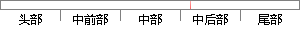

把交叉工具链的目录添加到环境变量中，具体为编辑用户目录下的.
片段位置图

相似结果
相似片段：以下是具体安装交叉编译工具链的步骤: (1)创建工作...该目录/usr/local/arm.1inux/bin 添加到环境变量...第3章嵌入式系统开发环境的建立文件@编辑@查看@终端...
| 标题 | 《基于H.264无线视频监控系统的研究》 |
| 对比库 | 中国学位论文全文数据库 |
| 作者 | 马亮 |
| 机构 | 大连海事大学 |
| 分类 | 电子科学与技术 |
| 年份 | 2011 |
| 相似率 | 80.95% （严重抄袭） |
※ 片段修改建议 ※
近似词参考：- 工具：东西 对象
- 具体：详细
- 交叉：交织
- 目录：目次
- 编辑：编纂
系统自动生成语句： 把交织东西链的目次添加到环境变量中，详细为编纂用户目次下的.
注：本片段修改建议为系统自动生成，仅供参考。